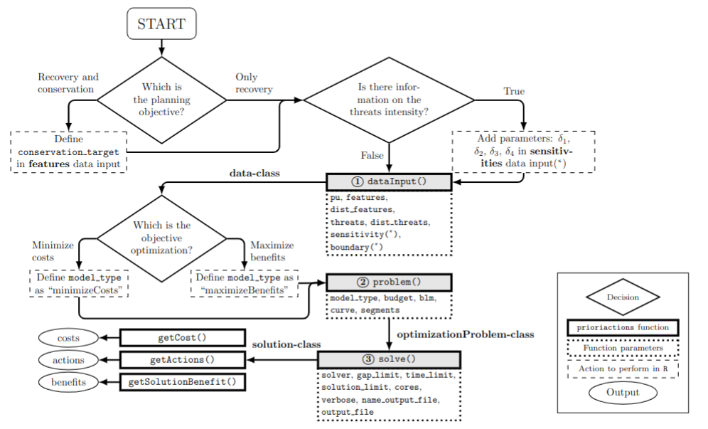

The prioriactions package is a new effort to bring exact
modeling methods from operations research (OR) to conservation
decision-making. Taking advantage of the benefits offered by these
models over heuristics models (find more efficient solutions in a much
shorter period of time) (Beyer et al.
2016). prioriactions aims to identify what actions
should be implemented against what threats to achieve certain planning
objectives. These objectives are usually to minimize the costs of the
actions by achieving recovery targets or to maximize the benefit reached
using a certain available budget. This package has the functionality of
reading input data formatted in a similar way to that of the widely used
conservation planning program Marxan (Watts et al. 2009).
The prioritizations are generated using mathematical programming
models and then solved employing optimizers (gurobi or rsymphony).
Structurally, models comprise an objective function that is generally
minimized or maximized and a series of constraints. The
prioriactions package currently can deal with two types of
models: cost minimization and benefit maximization—both with an
internally defined structure.
In addition, an essential part of the model is made up of the variables; these generally define the decisions to be made concerning the input data of the model. This data includes spatial information on planning units, conservation features, threats to those features, and, if it is the case, the sensitivities of those features to those threats.
Decision-making about what action to implement and where is complex
given many possible options (combinations of species, threats in space).
In turn, there is little knowledge about the effectiveness of actions
against threats and how these actions benefit or increase the
probability of persistence of conservation characteristics. Concerning
what was described above, the prioriactions package takes a
series of assumptions:
- Threats can be binary (presence/absence) or continuous (with levels of intensity).
- Only one action available by threat.
- Actions are fully effective, that is, an action against a threat eliminates it completely.
- The probability of persistence of the features is proportional to the ratio between threats addressed vs all threats affecting a feature in a given place. More information on the calculation of the probability of persistence in different conditions is presented in the sensitivities vignette.
Another essential aspect directly related to the probability of persistence of the features is the planning objectives that is independent of the objective function of the mathematical model. We define two types: if the aim is to recover threatened features ultimately or if the aim includes non-threatened features through their conservation. In simple terms, a conservation feature may be threatened in 80% of the planning units where it occurs, but it might not co-occur with threats in the remaining 20% of its distribution range. To address mixed prioritization exercises where both recovery and conservation objectives are pursued, we set two targets as inputs (set in the features data): the recovery target; where the user indicates how much proportion of that 80% is the one that he wants to solve through actions, and the conservation target; where it is established how much proportion of that 20% is the one to be incorporated. Because the primary objective of this package is to prioritise management actions against threats, a recovery target is mandatory, while conservation is optional. If the objective is to maximize benefits, it is assumed that it is required to maximize only the benefits related to recovery (prioritization of actions). For more information about these types of planning objectives see the planning objectives vignette.
Overview
The prioriactions package is characterized by using two
main types of functions: The creation and solve functions of
mathematical models (through three-steps logic); and the functions to
obtain information about the objects created
(e.g. getActions()). The first group of functions is
comprised of three clear steps:
Input data validation, using the
inputData()function. This function returns a data-class object that contains all the information about input data.Create mathematical model, using the
problem()function. This function returns a optimizationProblem-class object that contains information related to the mathematical model created.Solve model, using the
solve()function. This function returns a solution-class object that contains information related to the solution.

These three steps can be summarized using a single function: the
prioriactions() function. This allows the
input data validation, the creation of the mathematical model and its
resolution in a single step, returning a solution-class
object that contains information related to the solution. We recommend
the three step scheme due this allows us to verify that all the steps
are correct, and it can be helpful to check for errors without
completely rerunning everything again. For example, note that optimizationProblem-class
object can take significant time to create (depending on how large the
inputs are). therefore, the stepwise scheme allows us to generate the optimizationProblem-class
object (following the first two steps) and then experiment with
different parameters for solving through the solve()
function.
Workflow
The general workflow when working with prioriactions
is:
- Call the
inputData()function to verify that the inputs have a correct structure. - Call the
problem()function to create a mathematical model. This has a series of parameters that allow you to control different aspects of your model. - Call the
solve()function to solve the model created in the previous step. - Get information about solutions with get prefix functions
(e.g.
getActions()orgetSolutionBenefit()).
Usage
Here we will introduce the use of the prioriactions
package from presenting the inputs data style to obtaining results.
First, we will load the prioriactions package.
# load package
library(prioriactions)The package inherits the input data from the marxan software, which is widely known for conservation planning (more details in marxan user manual). The data contains information about the species/features of our case study and spatial information about them. For this, the case study is divided into multiple sites called planning units (PU). In turn, information is provided on the representativeness values (targets) to be obtained for each species/feature. And other filds such as the cost associated with each PU. The package follows this data format and incorporates information about the threats and their relationship with those species/features.
All inputs in this package are in tabular format
(i.e. data.frame). For more information on he mandatory
fields in the input data, please see the help page for the
inputData() function.
Below you can find a basic example of using
prioriactions.
Planning units data
This is a data.frame that contains information about the
PU ids, monitoring costs, and status. Monitoring cost reflects
the cost of monitoring a planning unit either if selected for recovery
(e.g., monitoring presence of threats and their intensity) or
conservation (e.g., monitoring to ensure that no threats are present
and,therefore, only conservation might be needed). Status
indicates if the PU must (locked in or out) be part of the solution or
not.
# load planning unit data from prioriactions
data(sim_pu_data)
# print first six rows of data
head(sim_pu_data)## id monitoring_cost status
## 1 1 2 0
## 2 2 2 0
## 3 3 2 0
## 4 4 2 0
## 5 5 2 0
## 6 6 2 0The example contains 100 planning units, each with monitoring cost
values ranging from 1 to 10 and all status of 0 (not locked). A
RasterLayerobject can be used to present this spatial
information. Here, the planning units are represented as a raster (i.e.
a RasterLayer object) and each pixel corresponds to the
spatial extent of each panning unit. Here, the pixel values correspond
to the monitoring costs of each planning unit.
#plot monitoring costs
library(raster)
r <- raster(ncol=10, nrow=10, xmn=0, xmx=10, ymn=0, ymx=10)
values(r) <- sim_pu_data$monitoring_cost
plot(r)
Features data
There are two input data related to features; the first one is a
data.frame that contains information about the
features such as its id and targets
(mandatory when minimizing costs). And the second is a
data.frame that contains information on the spatial
distribution of these features across planning units. As
mentioned above, this information can be either binary
(presence-absence) or continuous (e.g., probability of occurrence of a
feature in a planning unit, or the area of occupancy of a features in a
planning unit).
# load features data from prioriactions
data(sim_features_data, sim_dist_features_data)
# print first six rows of data
head(sim_features_data)## id target_recovery name
## 1 1 11 feature1
## 2 2 16 feature2
## 3 3 8 feature3
## 4 4 9 feature4
head(sim_dist_features_data)## pu feature amount
## 201 1 3 1
## 202 2 3 1
## 203 3 3 1
## 204 4 3 1
## 205 5 3 1
## 206 6 3 1In the same way as planning units, a RasterLayerobject
can be used to present this spatial information. The pixel values in
each layer correspond to the amount of suitable feature available in a
given planning unit. Note that our planning unit raster layer and our
conservation feature stack have exactly the same spatial properties
(i.e. resolution, extent, coordinate reference system) so their pixels
line up perfectly. In this example, we assume binary values of amount
(presence and absence of features).
# load amount of features data
features <- reshape2::dcast(sim_dist_features_data,
pu~feature,
value.var = "amount",
fill = 0)
# create stack layer
group_rasters <- raster::stack(r, r, r, r)
values(group_rasters[[1]]) <- features$`1`
values(group_rasters[[2]]) <- features$`2`
values(group_rasters[[3]]) <- features$`3`
values(group_rasters[[4]]) <- features$`4`
names(group_rasters) <- c("feature 1", "feature 2", "feature 3", "feature 4")
plot(group_rasters)
Threats data
There are three input data related to threats. The first one provides information about the threats such as their id and name. The second provides information on the spatial distribution of these threats and the last one indicates which features is sensitive to what threat (sensitivities data).
# load threats data from prioriactions
data(sim_threats_data, sim_dist_threats_data, sim_sensitivity_data)
# print first six rows of data
head(sim_threats_data)## id name blm_actions
## 1 1 threat1 0
## 2 2 threat2 0
head(sim_dist_threats_data)## pu threat amount action_cost status
## 108 8 2 1 2 0
## 109 9 2 1 2 0
## 110 10 2 1 2 0
## 11 11 1 1 3 0
## 111 11 2 1 4 0
## 12 12 1 1 3 0
head(sim_sensitivity_data)## feature threat
## 1 1 1
## 2 2 1
## 3 3 1
## 4 4 1
## 5 1 2
## 6 2 2Note that the sim_dist_threats_data file contains
information on the cost of implementing an action against a
threat on a site, in addition to the status of a given action
in a planning that works in the same way as the status
associated with PU’s. In this example, a binary amount of threats
(presence/absence) is assumed. However, this amount can be continuous,
which implies a more in-depth analysis of the consequences for the
features (see more details in the sensitivities
vignette).
# load amount of threat data
threats <- reshape2::dcast(sim_dist_threats_data,
pu~threat,
value.var = "amount",
fill = 0)
threats <- tidyr::complete(threats, pu = 1:100)
# create stack layer
group_rasters <- raster::stack(r, r)
values(group_rasters[[1]]) <- threats$`1`
values(group_rasters[[2]]) <- threats$`2`
names(group_rasters) <- c("threat 1", "threat 2")
plot(group_rasters)
Boundary data
Provides information on the spatial relationship between PU and they are presented in long format. This input is not mandatory and is only necessary if you are interested in addressing connectivity.
# load boundary data from prioriactions
data(sim_boundary_data)
# print first six rows of data
head(sim_boundary_data)## id1 id2 boundary
## 1 1 1 0
## 2 2 1 1
## 3 3 1 2
## 4 4 1 3
## 5 5 1 4
## 6 6 1 5Step 1: Initialize the problem
After having loaded our data, we will now create the data
object through the inputData() function. With it you
can check if all the fields of the different inputs are correct.
# create conservation problem
b <- inputData(pu = sim_pu_data,
features = sim_features_data,
dist_features = sim_dist_features_data,
threats = sim_threats_data,
dist_threats = sim_dist_threats_data,
sensitivity = sim_sensitivity_data,
boundary = sim_boundary_data)
# print problem
print(b)## Data
## planning units: data.frame (100 units)
## monitoring costs: min: 1, max: 10
## features: feature1, feature2, feature3, feature4 (4 features)
## threats: threat1, threat2 (2 threats)
## action costs: min: 1, max: 10Note that once the problem is created, we can obtain information from
the object and thus know if the data was loaded correctly. For this, we
can use some functions that are inside the object (e.g
getThreatsAmount()).
# get information about object
b$getThreatsAmount()## [1] 2
b$getPlanningUnitsAmount()## [1] 100These are only two of all the methods you can use to get quick information about your data. The others can be found along with data-class information.
Furthermore, it is advisable to determine the maximum benefit
achievable for each conservation feature through the
getPotentialBenefit() function. Since this process can be
carried out before the creation of the mathematical model, it can help
establish recovery and conservation targets if the objective of the
mathematical model is to minimize costs.
# get benefit information
getPotentialBenefit(b)## feature dist dist_threatened maximum.conservation.benefit maximum.recovery.benefit maximum.benefit
## 1 1 47 47 0 47 47
## 2 2 30 28 2 28 30
## 3 3 66 56 10 56 66
## 4 4 33 33 0 33 33Note that the total distribution of the features (dist) and the threatened distribution (dist_threatened) is reported. Also, we report the amount of each features where they co-occur with threats they are sensitive to (maximum.recovery.benefit) and where they do not co-occur with any threats they are sensitive to (maximum.conservation.benefit). The inclusion of these last units in the solutions will depend on the target_conservation field in the input feature data.
Step 2: Create the mathematical model
The next step is to create the optimization
problem object with those data. prioriactions allows
types of models: minimizeCosts and
maximizeBenefits. The first one, minimizes the cost of the
solution whilst ensuring that all targets are met. Instead, the second
maximizes the benefits achieved by the features subject to a certain
budget. The use of one or the other is set in the
type_model parameter of the problem()
function.
# create optimization problem
c <- problem(b, model_type = "minimizeCosts")## Warning: The blm argument was set to 0, so the boundary data has no effect## Warning: Some blm_actions argument were set to 0, so the boundary data has no effect for these cases
# print problem
print(c)## Optimization Problem
## model sense: minimization
## dimensions: 284, 396, 12.632 kB (nrow, ncol, size)
## variables: 396Internally, the problem() function has a presolve that
identifies these problems and prevents you from continuing to the next
steps. In case the target set for a given species is higher than the
maximum achievable, the value will be internally replaced with the
maximum achievable.
The two warnings indicate that there are no values for blm and blm_actions (arguments to achieve greater connectivity in the solution), and therefore the input boundary file will have no effect.
Step 3: Solve the model
Finally, after creating the mathematical model, we can now solve it
with the solve() function. To solve our model, we need an
optimizer. Currently, prioriactions have available two:
gurobi (it needs a license to work) and rsymphony
(free to use). We highly recommend using gurobi (for more information on
how to obtain an academic license here).
# solve optimization problem
d <- solve(c, solver = "gurobi", verbose = TRUE, output_file = FALSE, cores = 2)## Gurobi Optimizer version 9.1.2 build v9.1.2rc0 (linux64)
## Thread count: 2 physical cores, 4 logical processors, using up to 2 threads
## Optimize a model with 284 rows, 396 columns and 785 nonzeros
## Model fingerprint: 0xc6718513
## Variable types: 176 continuous, 220 integer (220 binary)
## Coefficient statistics:
## Matrix range [5e-01, 2e+00]
## Objective range [1e+00, 1e+01]
## Bounds range [1e+00, 1e+00]
## RHS range [8e+00, 2e+01]
## Found heuristic solution: objective 964.0000000
## Found heuristic solution: objective 396.0000000
## Presolve removed 250 rows and 277 columns
## Presolve time: 0.00s
## Presolved: 34 rows, 119 columns, 237 nonzeros
## Variable types: 0 continuous, 119 integer (101 binary)
##
## Root relaxation: objective 1.445000e+02, 22 iterations, 0.00 seconds
##
## Nodes | Current Node | Objective Bounds | Work
## Expl Unexpl | Obj Depth IntInf | Incumbent BestBd Gap | It/Node Time
##
## 0 0 144.50000 0 2 396.00000 144.50000 63.5% - 0s
## H 0 0 149.0000000 144.50000 3.02% - 0s
## * 0 0 0 146.0000000 146.00000 0.00% - 0s
##
## Cutting planes:
## Cover: 2
##
## Explored 1 nodes (26 simplex iterations) in 0.00 seconds
## Thread count was 2 (of 4 available processors)
##
## Solution count 4: 146 149 396 964
##
## Optimal solution found (tolerance 0.00e+00)
## Best objective 1.460000000000e+02, best bound 1.460000000000e+02, gap 0.0000%Note that the log is shown by default with relevant information about the optimization process (verbose = TRUE). This information can be important when evaluating how the process is being carried out. For example, to check the solution’s quality (gaps), the size of the problem, or the cores being used. More information on how to read this log in MIP_logging documentation.
These three steps can be shortened to just one with the
prioriactions() function. This function inherits all the
parameters of the inputData(), problem(), and
solve() functions:
# use prioriactions function
d2 <- prioriactions(pu = sim_pu_data, features = sim_features_data,
dist_features = sim_dist_features_data,
threats = sim_threats_data,
dist_threats = sim_dist_threats_data,
sensitivity = sim_sensitivity_data,
boundary = sim_boundary_data,
model_type = "minimizeCosts",
solver = "gurobi",
verbose = TRUE,
output_file = FALSE,
cores = 2)## Warning: The blm argument was set to 0, so the boundary data has no effect## Warning: Some blm_actions argument were set to 0, so the boundary data has no effect for these cases## Gurobi Optimizer version 9.1.2 build v9.1.2rc0 (linux64)
## Thread count: 2 physical cores, 4 logical processors, using up to 2 threads
## Optimize a model with 284 rows, 396 columns and 785 nonzeros
## Model fingerprint: 0xc6718513
## Variable types: 176 continuous, 220 integer (220 binary)
## Coefficient statistics:
## Matrix range [5e-01, 2e+00]
## Objective range [1e+00, 1e+01]
## Bounds range [1e+00, 1e+00]
## RHS range [8e+00, 2e+01]
## Found heuristic solution: objective 964.0000000
## Found heuristic solution: objective 396.0000000
## Presolve removed 250 rows and 277 columns
## Presolve time: 0.00s
## Presolved: 34 rows, 119 columns, 237 nonzeros
## Variable types: 0 continuous, 119 integer (101 binary)
##
## Root relaxation: objective 1.445000e+02, 22 iterations, 0.00 seconds
##
## Nodes | Current Node | Objective Bounds | Work
## Expl Unexpl | Obj Depth IntInf | Incumbent BestBd Gap | It/Node Time
##
## 0 0 144.50000 0 2 396.00000 144.50000 63.5% - 0s
## H 0 0 149.0000000 144.50000 3.02% - 0s
## * 0 0 0 146.0000000 146.00000 0.00% - 0s
##
## Cutting planes:
## Cover: 2
##
## Explored 1 nodes (26 simplex iterations) in 0.00 seconds
## Thread count was 2 (of 4 available processors)
##
## Solution count 4: 146 149 396 964
##
## Optimal solution found (tolerance 0.00e+00)
## Best objective 1.460000000000e+02, best bound 1.460000000000e+02, gap 0.0000%Getting information about solutions
getActions()
This function retrieves the distribution of actions for each threat across planning units, the set of planning units that have been selected for conservation in case a mix of recovery and conservation targets had been set, and the group of planning units selected for connectivity. In all cases selection of a particular planning unit for either of these objectives is indicated with a value of 1. Note that a planning unit could have been selected for example for the implementation of different actions, so multiple 1s could be found for a single planning unit.
# get actions from solution
actions <- getActions(d, format = "wide")
# print first six rows of data
head(actions)## solution_name pu 1 2 conservation connectivity
## 1 sol 1 0 0 0 0
## 2 sol 2 0 0 0 0
## 3 sol 3 0 0 0 0
## 4 sol 4 0 0 0 0
## 5 sol 5 0 0 0 0
## 6 sol 6 0 0 0 0Note that the getActions() function automatically
assumes that the index of the action corresponds to the threat
id (since there is an action per threat), in this case, 1 and 2
respectively.
# plot actions
values(group_rasters[[1]]) <- actions$`1`
values(group_rasters[[2]]) <- actions$`2`
names(group_rasters) <- c("action 1", "action 2")
plot(group_rasters)
getSolutionBenefit()
This function retrieves the benefits achieved by each feature. The output contains information on the benefit achieved by conservation (benefit.conservation), the benefit achieved by recovery (benefit.recovery) and the sum of both (benefit.total).
# get benefits of solution
benefits <- getSolutionBenefit(d, type = "total")
# print first six rows of benefit data
head(benefits)## solution_name feature benefit.conservation benefit.recovery benefit.total
## 1 sol 1 0 11 11
## 2 sol 2 0 16 16
## 3 sol 3 0 10 10
## 4 sol 4 0 9 9In this specific case, it can be seen that we have only obtained recovery benefits (for doing actions to abate threats) and not conservation of sites. This is specifically due to the fact that we have not set any conservation target. If we compare the benefits obtained concerning the established recovery targets, we see that for feature 3, we got more benefits than set as target (8). This is commonly achieved by incidental representation, where specific actions necessary to achieve the objective of a feature end up benefiting other features.
The getSolutionBenefit() function also allows to obtain
all the benefits achieved from each planning unit using the
type param:
# get benefits of solution
local_benefits <- getSolutionBenefit(d, type = "local")
# plot local benefits
local_benefits <- reshape2::dcast(local_benefits,
pu~feature,
value.var = "benefit.total",
fill = 0)
group_rasters <- raster::stack(r, r, r, r)
values(group_rasters[[1]]) <- local_benefits$`1`
values(group_rasters[[2]]) <- local_benefits$`2`
values(group_rasters[[3]]) <- local_benefits$`3`
values(group_rasters[[4]]) <- local_benefits$`4`
names(group_rasters) <- c("feature 1", "feature 2", "feature 3", "feature 4")
plot(group_rasters)
getCost()
Function to obtain the costs for each of the actions prescribed in each planning unit, including monitoring actions.
## solution_name monitoring threat_1 threat_2
## 1 sol 61 20 65
getConnectivityPenalty()
Function to the connectivity penalty of the solution, split by overall connectivity penalty among all planning units selected as part of the solution (regardless of what action has been prescribed), and connectivity penalties for each action individually (e.g., considering only the subset of planning units where a particular action has been prescribed). Note that in all cases the connectivity penalty shows the degree disaggregation of planning units in solutions, so high penalty values indicate solutions poorly connected.
# get connectivity penalty of solution
conn <- getConnectivityPenalty(d)
# print the connectivity penalty data
head(conn)## solution_name units threat_1 threat_2
## 1 sol 9042.102 917.544 4095.1
getPerformance()
Function to obtain information about the solving process of the mathematical model. Four parameters of the solution are presented: the objective value that will depend on what type of model used (minimizeCosts or maximizeBenefits); the gap, which indicates the quality of the solution; the solving time and status, which indicates the status of the solution (whether it is optimal or not).
# get performance of solution
perf <- getPerformance(d)
# print the performance data
head(perf)## solution_name objective_value gap solving_time status
## 1 sol 146 0 0.004 Optimal solution (according to gap tolerance: 0)More details of these functions in the references section.
Sensitivity analyses on blm, budget and target parameters
You may be interested in evaluating different values of targets or budgets. We have implemented evaluation functions that allow different parameters to be run in sequence for the same mathematical model. You can do this by manually running the previous steps for the different parameters (i.e., running the previous steps once by parameter, such as different targets, budgets or blm values). However, the eval functions have two advantages: 1) they are more efficient at creating the models. This is because the model needs to be build only once and then updated with the new information; 2) the output is a portfolio object, which allows obtaining information about the group of solutions, including, all get functions related with all solution objects simultaneously.
Now, we want to evaluate different levels of targets. For example,
20%, 30% and 40% of the maximum benefit per feature. For this, we use
the evalTarget() function:
# evaluate differents targets
port <- evalTarget(pu = sim_pu_data, features = sim_features_data,
dist_features = sim_dist_features_data,
threats = sim_threats_data,
dist_threats = sim_dist_threats_data,
sensitivity = sim_sensitivity_data,
boundary = sim_boundary_data,
values = c(0.2, 0.3, 0.4),
output_file = FALSE)## *********************************
## Iteration 1 of 3: Prop0.2
## *********************************## Warning: The blm argument was set to 0, so the boundary data has no effect## Warning: Some blm_actions argument were set to 0, so the boundary data has no effect for these cases## Gurobi Optimizer version 9.1.2 build v9.1.2rc0 (linux64)
## Thread count: 2 physical cores, 4 logical processors, using up to 2 threads
## Optimize a model with 284 rows, 396 columns and 785 nonzeros
## Model fingerprint: 0x61c57d26
## Variable types: 176 continuous, 220 integer (220 binary)
## Coefficient statistics:
## Matrix range [5e-01, 2e+00]
## Objective range [1e+00, 1e+01]
## Bounds range [1e+00, 1e+00]
## RHS range [4e-01, 1e+01]
## Found heuristic solution: objective 964.0000000
## Found heuristic solution: objective 311.0000000
## Presolve removed 250 rows and 277 columns
## Presolve time: 0.00s
## Presolved: 34 rows, 119 columns, 237 nonzeros
## Found heuristic solution: objective 169.0000000
## Variable types: 0 continuous, 119 integer (101 binary)
##
## Root relaxation: objective 1.155000e+02, 30 iterations, 0.00 seconds
##
## Nodes | Current Node | Objective Bounds | Work
## Expl Unexpl | Obj Depth IntInf | Incumbent BestBd Gap | It/Node Time
##
## 0 0 115.50000 0 6 169.00000 115.50000 31.7% - 0s
## H 0 0 132.0000000 115.50000 12.5% - 0s
## H 0 0 128.0000000 115.50000 9.77% - 0s
## H 0 0 127.0000000 115.50000 9.06% - 0s
## 0 0 118.50000 0 3 127.00000 118.50000 6.69% - 0s
## H 0 0 125.0000000 118.50000 5.20% - 0s
## * 0 0 0 120.0000000 120.00000 0.00% - 0s
##
## Cutting planes:
## Gomory: 2
## Cover: 8
## MIR: 1
##
## Explored 1 nodes (42 simplex iterations) in 0.00 seconds
## Thread count was 2 (of 4 available processors)
##
## Solution count 8: 120 125 127 ... 964
##
## Optimal solution found (tolerance 0.00e+00)
## Best objective 1.200000000000e+02, best bound 1.200000000000e+02, gap 0.0000%## *********************************
## Iteration 2 of 3: Prop0.3
## *********************************## Warning: The blm argument was set to 0, so the boundary data has no effect
## Warning: Some blm_actions argument were set to 0, so the boundary data has no effect for these cases## Gurobi Optimizer version 9.1.2 build v9.1.2rc0 (linux64)
## Thread count: 2 physical cores, 4 logical processors, using up to 2 threads
## Optimize a model with 284 rows, 396 columns and 785 nonzeros
## Model fingerprint: 0xd3db0e90
## Variable types: 176 continuous, 220 integer (220 binary)
## Coefficient statistics:
## Matrix range [5e-01, 2e+00]
## Objective range [1e+00, 1e+01]
## Bounds range [1e+00, 1e+00]
## RHS range [6e-01, 2e+01]
## Found heuristic solution: objective 964.0000000
## Found heuristic solution: objective 445.0000000
## Presolve removed 250 rows and 277 columns
## Presolve time: 0.00s
## Presolved: 34 rows, 119 columns, 237 nonzeros
## Found heuristic solution: objective 241.0000000
## Variable types: 0 continuous, 119 integer (101 binary)
##
## Root relaxation: objective 1.865000e+02, 34 iterations, 0.00 seconds
##
## Nodes | Current Node | Objective Bounds | Work
## Expl Unexpl | Obj Depth IntInf | Incumbent BestBd Gap | It/Node Time
##
## 0 0 186.50000 0 8 241.00000 186.50000 22.6% - 0s
## H 0 0 205.0000000 186.50000 9.02% - 0s
## 0 0 193.00000 0 2 205.00000 193.00000 5.85% - 0s
## H 0 0 197.0000000 193.00000 2.03% - 0s
## 0 0 195.50000 0 3 197.00000 195.50000 0.76% - 0s
## * 0 0 0 196.0000000 196.00000 0.00% - 0s
##
## Cutting planes:
## Gomory: 2
## Cover: 7
## MIR: 1
## Relax-and-lift: 1
##
## Explored 1 nodes (52 simplex iterations) in 0.00 seconds
## Thread count was 2 (of 4 available processors)
##
## Solution count 6: 196 197 205 ... 964
##
## Optimal solution found (tolerance 0.00e+00)
## Best objective 1.960000000000e+02, best bound 1.960000000000e+02, gap 0.0000%## *********************************
## Iteration 3 of 3: Prop0.4
## *********************************## Warning: The blm argument was set to 0, so the boundary data has no effect
## Warning: Some blm_actions argument were set to 0, so the boundary data has no effect for these cases## Gurobi Optimizer version 9.1.2 build v9.1.2rc0 (linux64)
## Thread count: 2 physical cores, 4 logical processors, using up to 2 threads
## Optimize a model with 284 rows, 396 columns and 785 nonzeros
## Model fingerprint: 0xa62c2e48
## Variable types: 176 continuous, 220 integer (220 binary)
## Coefficient statistics:
## Matrix range [5e-01, 2e+00]
## Objective range [1e+00, 1e+01]
## Bounds range [1e+00, 1e+00]
## RHS range [8e-01, 2e+01]
## Found heuristic solution: objective 964.0000000
## Found heuristic solution: objective 564.0000000
## Presolve removed 250 rows and 277 columns
## Presolve time: 0.00s
## Presolved: 34 rows, 119 columns, 237 nonzeros
## Found heuristic solution: objective 317.0000000
## Variable types: 0 continuous, 119 integer (101 binary)
##
## Root relaxation: objective 2.670000e+02, 43 iterations, 0.00 seconds
##
## Nodes | Current Node | Objective Bounds | Work
## Expl Unexpl | Obj Depth IntInf | Incumbent BestBd Gap | It/Node Time
##
## 0 0 267.00000 0 10 317.00000 267.00000 15.8% - 0s
## H 0 0 290.0000000 267.00000 7.93% - 0s
## H 0 0 284.0000000 267.00000 5.99% - 0s
## 0 0 276.50000 0 6 284.00000 276.50000 2.64% - 0s
## H 0 0 279.0000000 276.50000 0.90% - 0s
## 0 0 276.50000 0 3 279.00000 276.50000 0.90% - 0s
## H 0 0 278.0000000 276.50000 0.54% - 0s
## 0 0 cutoff 0 278.00000 278.00000 0.00% - 0s
##
## Explored 1 nodes (68 simplex iterations) in 0.01 seconds
## Thread count was 2 (of 4 available processors)
##
## Solution count 7: 278 279 284 ... 964
##
## Optimal solution found (tolerance 0.00e+00)
## Best objective 2.780000000000e+02, best bound 2.780000000000e+02, gap 0.0000%Like the prioriactions() function, all eval
functions inherit the parameters of the inputData(),
problem(), and solve() functions.
# get cost of solutions inside portfolio
getCost(port)## solution_name monitoring threat_1 threat_2
## 1 Prop0.2 63 10 47
## 2 Prop0.3 98 26 72
## 3 Prop0.4 141 48 89
getConnectivityPenalty(port)## solution_name units threat_1 threat_2
## 1 Prop0.2 8123.805 904.68 3229.636
## 2 Prop0.3 11334.252 1760.095 4431.999
## 3 Prop0.4 12726.708 2336.171 4739.123Note that increasing the target per feature naturally increases the number of actions to be taken to achieve it and therefore the associated cost. This, in turn, increases the connectivity values between conservation actions.